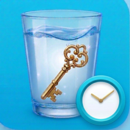

Water Wisdom
Trink rechtzeitig Wasser.
Lebe weise.
Water Wisdom erinnert dich ans Wassertrinken, berechnet dein persönliches Tagesziel und belohnt jedes Glas mit einem kurzen weisen Gedanken großer Denker.
▶ Kostenlos bei Google Play ladenKostenlos · Funktioniert offline · Ohne Registrierung
Alles, um genug Wasser zu trinken
Dein persönliches Ziel
Berechnet aus Gewicht, Geschlecht und Klima — oder selbst festlegen.
Smarte Erinnerungen
Über den Tag verteilt, rücksichtsvoll bei Mahlzeiten und nie nachts.
Schritte und Training
Der optionale Schrittzähler und „Mein Tagesablauf“ fügen an aktiven Tagen Wasser hinzu.
Ein Glas, das sich füllt
Eine lebendige Welle zeigt, wie voll dein Tagesglas ist.
Ein weiser Gedanke zu jedem Glas
Kurze Zitate von Mark Aurel, Seneca, Konfuzius, Laozi und anderen.
Fortschritt und Serien
Statistiken für 7 und 30 Tage, Tagesserien, Serienschutz und Pausenmodus für den Urlaub.
Widgets für den Startbildschirm
Ein kompakter Wasserzähler und ein großes Widget mit Zitat.
Ruhiges Design
Meer-Hintergründe, sanfte Farben und ein schwarzes AMOLED-Design.
Gut zu wissen
Deine Daten bleiben bei dir
Kein Konto, keine Werbung, keine Datensammlung. Alles, was du eingibst, bleibt auf deinem Handy.